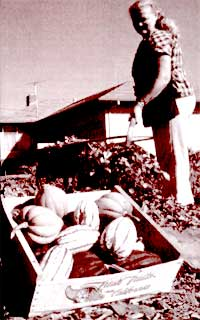
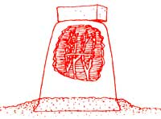

The why's, what's, and how's of taking cover this autumn
FALL MULCHING HAS MANY BENEFITS not the least of which, as far as I'm concerned, is that you can walk around in your garden on rainy days and not have three inches of sticky mud on the soles of your shoes when you come back inside.
But besides acting as organic StainMaster, laying mulch in the fall (and mulching anytime, really) reduces water loss in soil, suppresses weed growth, and protects plants from temperature extremes-the final warm October days and first wintry November nights.
Soil Moisture Retention
Mulch's ability to conserve soil moisture has long been documented. It may be its most universally recognized virtue. While authorities and test results differ, it is clear that moisture evaporation from soil covered with mulch is reduced anywhere from 10 to 50%. Whichever you accept, the water-conserving value of mulching can't be overemphasized, especially in these times of water restrictions and shortages.
Mulch keeps the soil from drying out partly because it prevents dew and water drawn up from the subsoil from escaping. Contrary to what a lot of people believe, dew is not simply condensation of water from the atmosphere. It is also condensation of moisture from the air pockets found in the soil. Most dew is completely wasted, as far as plant growth is concerned, unless there is something on the surface to catch it and prevent it from evaporating.
Weed Suppression
As for weed control, one study has found weeding time to be reduced by almost two-thirds through the use of mulches. Proper mulching can practically eliminate the need for weeding and cultivating.
There are a few catches, however. First, the mulch itself must be weed-free. Many a gardener has had the best mulching intentions go astray with one application of weed-strewn hay or manure. They end up introducing more weeds to their garden than they controlled.
Second, a mulch must be deep enough to prevent existing weed seeds from germinating. As with most other seeds, weeds need light to germinate. Those weeds trying to come up under a mulch sprout in darkness and wither away. If a mulch is apold too thinly or unevenly, weeds may still find their way through. So when applying your mulch, you'll want to think like a weed and cover all the open areas.
Finally, mulches won't smother all weeds. Some particularly tough weeds have the fortitude to push themselves up through just about any mulch. These should be easy to spot, however, and even more easily plucked when growing in a mulched bed.
Soil Temperature
The effect mulching has on soil temperatures is probably one of the most often overlooked benefits. Many of us are more concerned with aboveground temperatures and don't spend much time pondering what's happening underground. Simply stated: Mulch is insulation. It keeps the soil around your plants' roots cooler on warm days and warmer on cold nights. This is especially important during rapid temperature shifts.
In cold weather, mulch works to prevent the soil from alternately freezing and thawing, which leads to soil heaving and root damage. This doesn't mean the soil won't freeze; it just won't happen overnight. It's those rapid changes that not only threaten aboveground growth, but may also send tender plant roots into shock, Winter mulches are usually applied in the fall after the plants are dormant, and are removed the following spring.
You'll want to mulch anything that needs protection from moisture loss, temperature change, or weed infestation In the fall, though, more often than not that means rhododendrons, azaleas, roses, bulbs, and annuals. I say "more often than not" because, with seasons and climates varying so much throughout the country, a blanket statement would be inaccurate. That said, here is my advice.
Rhododendrons and azaleas. As far as these are concerned, unmulched plants, or those with an insufficient amount of mulch, may suffer from chlorosis (yellow or blanched leaves), weak or underdeveloped leaves, or even death. These plants cannot tolerate hot, dry soil. Their feeding roots are severely injured under such condidont and be plant has trouble putting out healthy leaves, never mind spectacular blooms. Mulching can help cool the roots and hold moisture.
In addition, since these are mostly evergreen plants, which carry their leaves all winter, they are continually losing water to the air. If there is an inadequate amount of soil moisture, the plant will lose water faster than it can replace it. The end result will be brown, scorched foliage, which in extreme cases may just give up the ghost and drop off. By watering the ground well and mulching in the fall, you can insulate the soil from sudden temperature changes and ensure that rhododendrons have an ample moisture supply.
Rhododendrons and azaleas both prefer slightly acid soils, and your mulch selec tion can play a part. I suggest you choose an organic mulch, like leaves or pine needles. A dry-leaf mulch (especially oak leaves), spread 10 to 12 inches deep, can be laid down at planting (these will decompose quickly to give you a 3- or 4-inch layer). A 2- or 3-inch layer of pine needles will also do the trick. Wood chips or sawdust-if they are weathered-or peat moss can be substituted for pine needles.
If you are using one of these mulches and watering your rhododendrons following a fertilizer schedule but still have an unhealthy-looking plant, there must be something eke going on Maybe you hue an insect or disease problem or grew the wrong variety for your part of the country. But let's not blame the mulch. It has a bad enough rap as it N.
Roses, Jug about everyone who grows roses agrees that putting down a layer of mulch after the ground has started to cool is necessary to protect plants from temperature extremes and heaving. What they don't agree on is how to do it. Mulching roses in the fall is fairly simple if you remember why you're doing it. Most roses am amazingly hardy, so Me mulch isn't meant to keep them from freezing. The goal is to maintain constant temperature and avoid repeated freezing and taming.
There are hundreds of methods and materials for preparing roses for winter-almost as many as there are rose growers. Probably the most accepted is to mound about 10 to 12 inches of mulch around the base of the rosebush. This should not be done until after the first hard frost. If done too early, the roses may be fooled into a late growth spurt, which will delay dormancy and lead to more winter injury, not less.
What you decide to do from this point is open to all kinds of possibilities. In areas where Me temperature stays well below freezing for most of the season, you will want to provide some additional protection. Some ]can toward the Styrofoam "rose cones" that fit around the mounds; others prefer ground corncobs, sawdust, or chopped leaves.
The rose cones work well when used in conjunction with mounded soil. They can overheat during those sunny January thaws, so it's a good idea to poke a ventilation hole in the top. Another suggestion is to weight the cone down with a stone or something similar; otherwise your rose cones may end up in the neighbor's yard.
Wire cages filled with leaves or compost are often used in lieu of the Styrofoam cones. These cages needn't be stuffed to the gills with leaves. That makes for poor Or circulation and may lead to disease problems,
Whichever system you select, water the sot well before covering your roses and remove the mulch in the spring before new growth begins. If the mulch is left on until buds start swelling, it may put the new growth into shock when you remove it.
Bulbs. Certainly, mulching bulbs is not essential. But here in the great Northeast, the insulating value of a nice, thick organic mulch can't be overlooked. In Vermont, springflowering bulbs like tulips and daffodils are planted in late September or early October. The bulbs need time to develop their roots before the ground freezes and they lapse into winter dormancy. To postpone their long winter's nap, I protect them with a layer of rotted manure, leaves, or compost.
Wood chips, corncobs, sawdust-just about any mulch-will inhibit the emergence of your bulbs. If they can push up through a wet spring soil or several inches of snow, I doubt a couple of inches of mulch will slow them down.
Annuals. Mulch your annual beds earlybefore the first frost has settled into the soil-so that earthworms and beneficial microorganisms can stay at work longer during the cold months.
Wait, you say, is that everything I have to mulch to prepare for cold weather? Yes and no. Yes, this is a good place to start, but you know through your own experience what your season is like, so act accordingly And no mew's more to mulch after the ground has cooled. In the next issue (# 129), I'll discuss winter mulching of delicate and hardy vegetables, fruits, and woody plants in Mulching, Part II.
Editor's note: Stu Campbell is the author of The Mulch But: A Complete Guide for Gardeners, from which this article is adapted It's available from Storey Communications (Schoolhouse Rd., Pownal, VT 60261 or Call 800/827-8673; $819).
|
 Sandy Langhorst, of Santa Rosa, California, prepares her autumn garden with a dried-leaf mulch. |
|
|
|
 |
|
|